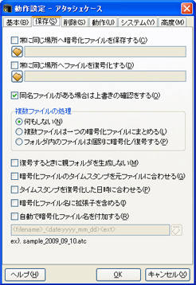
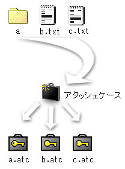
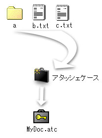
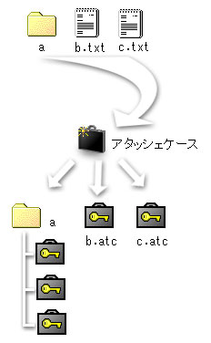

アタッシェケースで作成する、暗号化ファイルや復号したファイルなどの保存・上書きに関する設定を行えます。

<Desktop> |
|
「デスクトップ」フォルダ |
<My Documents> |
|
「マイドキュメント」フォルダ |
<Program Files> |
|
「Program Files」フォルダ |
<AttacheCase> |
|
アタッシェケースの実行ファイル（AtchCase.exe）があるフォルダ |
<volume:*****> |
|
指定のボリュームラベル名（*****）を持つドライブ |
たとえば、「<DeskTop>\temp」と指定すれば、デスクトップにあるtempフォルダ内を常に保存する先として認識します。
また、「<volume:MOBILE>\」と指定したとき、抜き差し可能なフラッシュメモリで、常にドライブレターが変わるようなとき、そのフラッシュメモリのボリュームラベル名を指定しておくだけで、暗号化の際に自動で該当のドライブを探してパスを補完します。
たとえば、差されたフラッシュメモリが「H:\」とWindowsによって認識され、ボリュームラベルが「MOBILE」とするとき、暗号化ファイルを常に保存する場所を「<volume:MOBILE>\temp」とだけ指定しておけば、作成される暗号化ファイルは、
H:\temp\暗号化ファイル.atc
として保存されることになります。フラッシュメモリを差したタイミングによって、「H:\」ドライブが変わってしまったとしても、正常に保存することが可能です。なお、指定の保存先がない場合は、エラーメッセージが出て、暗号化処理を終了します。



（※ただし、該当のフォルダ内に通常ファイルなどが混じっている場合は、暗号/復号処理が入り乱れますので注意が必要です。暗号/復号後に元ファイル削除するなどのオプション指定をしておくと良いでしょう。）
・ファイル名 |
|
例） EncodeFile |
・拡張子 |
|
例） .atc |
・日付 |
|
例） EncodeFile[2004年2月1日].atc |
・連番 |
|
例） EncodeFile[000].atc〜EncodeFile[999].atc |
・ランダムな文字列 |
|
例） fKUSup'}.atc |
・先頭からのファイル名 |
|
例） Enco |
・末尾からのファイル名 |
|
例） File |
|
||
・ファイル名 |
|
<filename> |
・拡張子 |
|
<ext> |
・日時 |
|
<date:[指定書式]> |
・連番 |
|
<number:[桁数]> |
・ランダムな文字列 |
|
<random:[文字数]> |
・ファイル名先頭文字列 |
|
<fhead:[文字数]> |
・ファイル名末尾文字列 |
|
<fend:[文字数]> |
これらを組み合わせて指定することで、常に自動で付けるファイル名規則を指定します。
なかなか難しいかとは思いますが、フォーム上にサンプル表示されますので、入力しながらいろいろ試してみてください。
【日時】
たとえば、<date:yyyy_mm_dd>と、date: の後に書式を指定することで、現在の日時を挿入することができます。
挿入できる詳しい書式については、「日付書式例」を参照ください。
現在日時が 2004/2/1 15:03:42 だとして、以下の指定を行うと、
<date:yyyy_mm_dd>
↓
2004_02_01
<date:yymmdd-hhnnss>
↓
040201-150342
などと置き換えられます。
【連番】
たとえば、<number:3>と number: の後に数字を指定することで、挿入する通し番号の桁数を指定できます。
作成されるファイル名が「sample.atc」だとすると、
<filename><number:3><ext>
と指定することで、「sample001.atc」から順にナンバリング、sample002.atc，sample003.atc…と連続して作成されます。
この「連番」書式は、使い方によっては便利な機能です。自動的に欠番を探して、重複がないようにファイル名を付けて作成していくので、いちいち上書きの確認がありません。暗号化ファイルを連続して作成して版管理したり、バックアップとして使用することができます。
【ランダムな文字列】
たとえば、<random:8>と、random: の後に数字を指定することで、その文字数分ランダムな文字列を挿入することができます。
<random:8><ext>
として作成すると、
MA[vV}e7.atc
といった、その都度ランダムな文字列（英数字、記号から）を生成、組み合わせてファイル名を作ります。
ファイル名から中身を類推されるのを防いだり、隠蔽したいときに便利な機能でしょう。ただし、これをやると元ファイル名が、暗号化ファイルからはまったく分からなくなるので、管理には十分注意が必要です。
【ファイル名先頭/末尾文字列】
たとえば、生成されるファイル名が「EncodeFile.atc」とします。<fhead:4>と、fhead: の後に数字を指定することで、ファイル名を先頭からその文字数分だけ抜いた名前を付けることができます。
<fhead:3><ext>
として作成すると、
Enc.atc
同様に、
<fend:4><ext>
と指定すると、
File.atc
となります。
Created with the Personal Edition of HelpNDoc: Free iPhone documentation generator